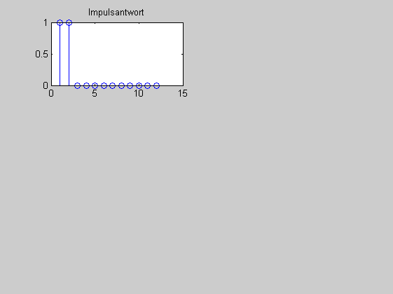
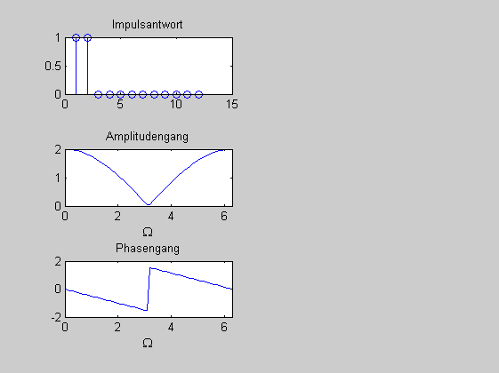
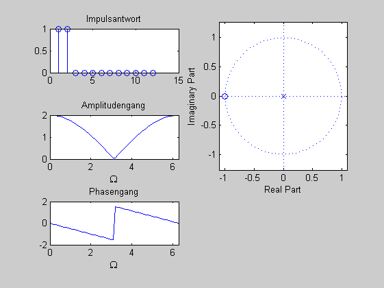
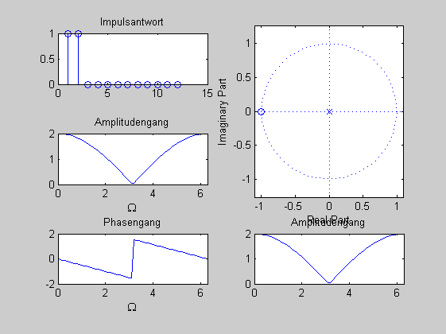
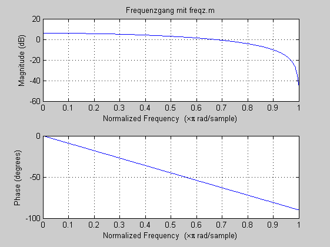

Contents
Aufgabe: Frequenzgang
Für ein Filter mit der Impulsantwort \( g[k] = [ 1 1] \) sind gesucht: (i) ein Realisierungsschema, (ii) der Frequenzgang, (iii) die komplexe Übertragungsfunktion, (iv) die Pole und Nullstellen mit PN-Diagramm und (v) eine Skizze des Amplitudengangs mit Bezug zum PN-Diagramm. (c) HSM, B. Wirnitzer 31.7.2012
clear all; close all;
(i) Realisierung durch FIR-Filter
b = [1 1];
a = 1;
IMPULS = [1 0 0 0 0 0 0 0 0 0 0 0];
y = filter(b,a,IMPULS);
figure(1); subplot(3,2,1);
stem(y); title('Impulsantwort');
 (ii) Frequenzgang
Später besser freqz.m verwenden
Omega = 0:0.1:2*pi; % G_O = 1 + exp(- j*Omega); G_O = exp(- 1j * Omega/2).* (2 * cos(Omega/2)); figure(1); subplot(3,2,3); plot(Omega,abs(G_O)); title('Amplitudengang'); xlabel('\Omega'); xlim([0 2*pi ]); subplot(3,2,5); plot(Omega,angle(G_O)); title('Phasengang'); xlabel('\Omega'); xlim([0 2*pi ]);
(iii) G(z)
G_z = z^0 + z^-1
(iv) PN-Diagramm
subplot(3,2,[2,4]), zplane(b,a);
(v) Skizze (händisch ergänzt)
figure(1); subplot(3,2,6);
plot(Omega,abs(G_O)); title('Amplitudengang');
xlim([0 2*pi ]);
 Ergänzung: Frequenzgang mit MAtlab
figure(2)
freqz(b,a, 512); title('Frequenzgang mit freqz.m')
